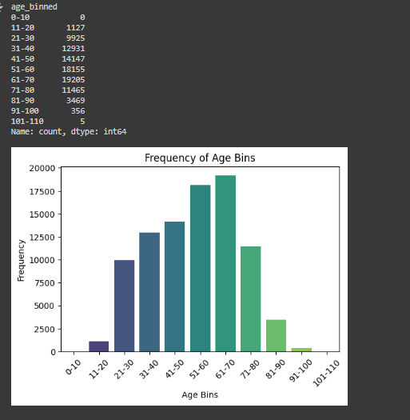
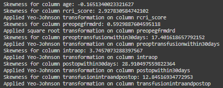
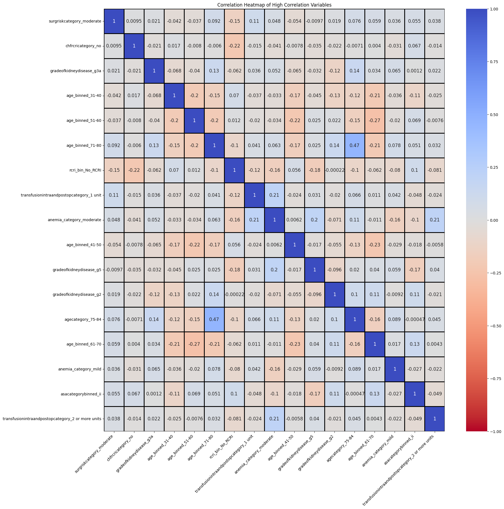

#Importing necessary libraries
import time
import pandas as pd
import numpy as np
import matplotlib.pyplot as plt
import seaborn as sns
import warnings
from pandas.api.types import CategoricalDtype
from sklearn.impute import SimpleImputerfrom scipy.stats import skew
from sklearn.preprocessing import PowerTransformer, QuantileTransformer,StandardScaler, MinMaxScaler
from sklearn.model_selection import train_test_split,RepeatedStratifiedKFold
from sklearn.tree import DecisionTreeClassifier
from sklearn.ensemble import RandomForestClassifier
from sklearn.preprocessing import label_binarize,LabelEncoder
from sklearn.metrics import accuracy_score, precision_score, recall_score, classification_report, confusion_matrix, roc_curve, auc
from imblearn.combine import SMOTEENN
from skopt import BayesSearchCV
from skopt.space import Real, Categorical, Integer
import xgboost as xgb
from lightgbm import LGBMClassifier
from statsmodels.stats.outliers_influence import variance_inflation_factor
from statsmodels.tools.tools import add_constant
warnings.filterwarnings('ignore')AutoML for Binary Classification
Automated Machine Learning (In-Progress)
Introduction
Hello everyone, this post is intended to demonstrate how it is possible to automate some of the evaluation process in deciding which machine learning models to utilise to achieve the best desired results, which is commonly know as AutoML.
I was intrigued that such a thing was possible and couldn’t wait to try it, here’s an attempt on my version of AutoML for a Binary Classification Model. Going forward, i would like to automate more of the common decision-making processes like pre-processing that is in tune with domain knowledge.
Changelog:
\[1.0.0\] - 2024-08-02 - Initial deployment after consolidating course work and initial refinement.
\[1.0.1\] - 2024-09-01 - Added Context, Logistic Regression, Fine-tuned Models, Evaluation of Results for Multivariate Analysis, Logistic Regression, Machine Learning Predictions
Context
Predicting surgical risks is crucial for enhancing patient safety and improving surgical outcomes by allowing healthcare providers to tailor care and allocate resources effectively.
By using real-world EMR data from obtained from Chan et al. (2018) [1], we aim to evaluate risk factors and develop predictive models to predict the following outcome: mortality within 30 days.
Methodology
The obtained data set includes 90,785 surgery patients (excluded Cardiac and Neurosurgery patients) from Singapore General Hospital from 1 January 2012 to 31 October 2016. For each outcome, we developed a respective multivariate model to evaluate the risks factors and test out different machine learning model to see which model best predict the outcome.
Importing Libraries
Load the Dataset
This Python code snippet uses TensorFlow’s Keras API to load the CIFAR-10 dataset and print the shapes of the training and test sets. The CIFAR-10 dataset is a popular dataset used for training machine learning and computer vision algorithms. It consists of 60,000 32x32 color images in 10 different classes, with 6,000 images per class.
url = 'https://raw.githubusercontent.com/weipengten/ISSS623GroupProject--Applied-Healthcare-/main/CARES_data.xlsx'
df = pd.read_excel(url, index_col='Indexno')
print(df.shape)
df.head()Data Cleaning
Replace missing values with nan
String formatting
Create bins for age as age_bins
Create bins for rcri_score as rcri_bin
Drop rows with at least 10 missing values in columns, 93.73% remaining
NUMERICAL columns (remaining columns except for DaysbetweenDeathandoperation): impute missing values with median
CATEGORICAL columns (remaining columns except for [‘mortality’, ‘daysbetweendeathandoperation’, ‘@30daymortality’, ‘thirtydaymortality’]): impute missing values with ‘None’
Replace missing values with nan
# replace missing values with pd.NA
null_values = ['#NULL!', 'BLANK', 'none', 'NA', '<NA>', 'None']
df.replace(null_values, np.nan, inplace=True)
# check data types and missing values
df.info()# statistical summary
df.describe()String formatting
# replace all column names with lowercase and replace spaces with underscores
df.columns = df.columns.str.lower().str.replace(' ', '_')
# replace all string values in the DataFrame with lowercase
df = df.applymap(lambda x: x.lower() if isinstance(x, str) else x)Replace missing values with nan
# replace missing values with pd.NA
null_values = ['#NULL!', 'BLANK', 'none', 'NA', '<NA>', 'None']
df.replace(null_values, np.nan, inplace=True)
# check data types and missing values
df.info()Check potential duplicates
# check potential duplicates
df.duplicated().sum()
# We will not drop duplicates in this dataste as
# they represent multiple legitimate entries representing different patientsFind all unique values for categorical features
# find all unique values for categorical features
for column in df.select_dtypes(include=['object']).columns:
print(f'{column}: {df[column].unique()}')Create bins for age as age_bins
# bin the age column
age_bins = [0, 10, 20, 30, 40, 50, 60, 70, 80, 90, 100, 110]
age_labels = ['0-10', '11-20', '21-30', '31-40', '41-50', '51-60', '61-70', '71-80', '81-90', '91-100', '101-110']
df['age_binned'] = pd.cut(df['age'], bins=age_bins, labels=age_labels, right=False)
# summarize frequency counts
age_binned_counts = df['age_binned'].value_counts().sort_index()
print(age_binned_counts, '\n')
plt.figure(figsize=(6, 4))
sns.barplot(x=age_binned_counts.index, y=age_binned_counts.values, palette="viridis")
plt.xlabel('Age Bins')
plt.ylabel('Frequency')
plt.title('Frequency of Age Bins')
plt.xticks(rotation=45)
plt.show()
df['age_binned'] = df['age_binned'].astype('object')
Create bins for rcri_score as rcri_bin
# Function to bin 'RCRI score' into distinct ordinal categories
def smart_binning(df, column_name, bin_column_name):
# Create a copy of the DataFrame to avoid modifying the original
_df = df.copy()
# Create a mapping for the bins, including a label for NaN values
bin_labels = {1: '1', 2: '2', 3: '3', 4: '4', 5: '5', 6: '6'}
_df[bin_column_name] = _df[column_name].map(bin_labels)
# Handle NaN values by assigning them to a specific category
_df[bin_column_name] = _df[bin_column_name].fillna('No_RCRI')
# Define the categorical type with ordered categories, including 'No_RCRI'
cat_type = CategoricalDtype(categories=['1', '2', '3', '4', '5', '6', 'No_RCRI'], ordered=True)
# Convert the new bin column to categorical type
_df[bin_column_name] = _df[bin_column_name].astype(cat_type)
return _df
# Apply the smart binning function
df = smart_binning(df, 'rcri_score', 'rcri_bin')
# Check if the rcri_bin column is ordinal
if isinstance(df['rcri_bin'].dtype, CategoricalDtype) and df['rcri_bin'].dtype.ordered:
print("rcri_bin is ordinal.")
else:
print("rcri_bin is not ordinal.")
print('\n')
# Print the categories and their order
print("Categories and order:", df['rcri_bin'].dtype.categories)
print('\n')
# Print the distribution of data in 'rcri_bin'
print(f"The distribution of data in 'rcri_bin' is as follows:\n{df['rcri_bin'].value_counts()}")
print('\n')
df['rcri_bin'] = df['rcri_bin'].astype('object')Visualize correlation for numerical column
correlation_matrix = df.select_dtypes(include=['number']).corr()
fontsize=8
plt.figure(figsize=(6,6))
sns.heatmap(correlation_matrix, annot=True, fmt='.2f', cmap='coolwarm', vmin=-1, vmax=1, cbar=True, annot_kws={'size': 8})
plt.title('Correlation Matrix for Numerical Columns', fontsize=10)
plt.xticks(fontsize=fontsize)
plt.yticks(fontsize=fontsize)
plt.show()Drop rows with at least 10 missing values in columns, 93.73% remaining
# define the threshold for missing values
threshold = 10
missing_counts = df.isna().sum(axis=1)
# Calculate the percentage of rows to keep
percentage_remaining = round((df[missing_counts < threshold].shape[0] / df.shape[0]) * 100, 2)
print(f"Percentage of rows with fewer than {threshold} missing values: {percentage_remaining}%")
# Drop rows with at least the specified number of missing values
df = df[missing_counts < threshold]
df.head()Data Validation
# Check the condition
condition_check = df[df['thirtydaymortality'] == True]['mortality'] == True
# Verify if all values meet the condition
if condition_check.all():
print('----------------------------------------')
print("All instances where 'thirtydaymortality' is True, 'mortality' is also True.")
print("Data validation step 1, there's no logical errors found for mortality and thirtydaymortality")
print('----------------------------------------')
else:
print("There are instances where 'thirtydaymortality' is True but 'mortality' is not True.")
# Data validation:
if 'mortality' in df.columns and 'daysbetweendeathandoperation' in df.columns:
# Check the conditions
condition_1 = df.loc[df['mortality'] == True, 'daysbetweendeathandoperation'].notnull().all()
condition_2 = df.loc[df['mortality'] == False, 'daysbetweendeathandoperation'].isnull().all()
# Print the results
print('----------------------------------------')
print("Condition 1 met:", condition_1)
print("Condition 2 met:", condition_2)
print("Data validation step 2, there's no logical errors found for mortality and daysbetweendeathandoperation")
print('----------------------------------------')
else:
print("The DataFrame does not contain the required columns.")Outlier detection for numerical features
numerical_columns = df.select_dtypes(include=['number']).columns
print("Numerical columns:", numerical_columns)
plt.figure(figsize=(16, 10))
for i, column in enumerate(numerical_columns, 1):
plt.subplot(2, 4, i)
sns.boxplot(y=df[column])
plt.title(column)
plt.tight_layout()
plt.show(){kind=link}
NUMERICAL columns (remaining columns except for DaysbetweenDeathandoperation): impute missing values with median)
# Initialize SimpleImputer to fill missing values with the median
imp = SimpleImputer(missing_values=np.nan, strategy='median')
# List all numeric columns in the DataFrame
numeric_columns = df.select_dtypes(include=['number']).columns
print("Numeric columns:", list(numeric_columns)) # we have also checked that all the numerical columns are correct, no binary variables are mistakenly treated as numeric variables.
# Define specific numeric columns for imputation
numeric_cols = [col for col in numeric_columns if col != 'daysbetweendeathandoperation']
print("Numeric columns:", list(numeric_cols))
# Fit the imputer on the specified numeric columns
imp.fit(df[numeric_cols])
# Transform the specified numeric columns by imputing missing values with the median
df[numeric_cols] = imp.transform(df[numeric_cols])
# Ensure the columns are of float32 type
df[numeric_cols] = df[numeric_cols].astype(np.float32)
# Print the DataFrame with imputed data to verify the changes
print("DataFrame with imputed numeric columns:")
print(df[numeric_cols])CATEGORICAL columns (remaining columns except for ['mortality', 'daysbetweendeathandoperation', ' @30daymortality', 'thirtydaymortality']): impute missing values with ‘None’
# Initialize SimpleImputer for categorical columns to fill missing values with 'None'
cat_imp = SimpleImputer(missing_values=np.nan, strategy='constant', fill_value='None')
# List all categorical columns in the DataFrame
categorical_columns = df.select_dtypes(include=['object']).columns
print("Categorical columns:", list(categorical_columns))
# Columns to exclude
exclude_columns = ['mortality', 'daysbetweendeathandoperation', '@30daymortality', 'thirtydaymortality']
# Filter out the excluded columns from the list of categorical columns
categorical_columns = [col for col in categorical_columns if col not in exclude_columns]
# Fit the imputer on the categorical columns
cat_imp.fit(df[categorical_columns])
# Transform the categorical columns by imputing missing values with 'None'
df[categorical_columns] = cat_imp.transform(df[categorical_columns])
# find all unique values for categorical features
for column in df.select_dtypes(include=['object']).columns:
print(f'{column}: {df[column].unique()}'){kind=link}
1. Frame the Problem
Target variable: thirtydaymortality
Type: Classification Problem
Binary Outcome: (No,Yes)
2. Data sensing, preprocessing:
Feature Selection:Exclusion of variables that deomonstrates high redundancy or Multicollinearity with thirtydaymortality:@30daymortality
mortality
daysbetweendeathandoperation
# Feature Selection:
# drop unecessary columns, features that occur only after the target result should be excluded
features_to_exclude = ['mortality', 'daysbetweendeathandoperation', '@30daymortality']
df = df.drop(columns=features_to_exclude)3. Data Wrangling, Transformation:
Numerical features Transformation:
Test for normality of numeric columns: ALL are not normally distributed
DIstribution transfomation for columns
Distribution normalisation and standardisation for columns
Cateogorical features Transformation:
- One-hot encoding to ensure smooth usage by tree learning algorithms
Numerical features Transformation
Test for Normality
# Test for normality of numeric columns: ALL are not normally distributed
import matplotlib.pyplot as plt
import seaborn as sns
from scipy import stats
# Define specific numeric columns for imputation
numeric_cols = [col for col in numeric_columns if col != 'daysbetweendeathandoperation']
print("Numeric columns:", list(numeric_cols))
# Function to test for normal distribution
def test_normal_distribution(data, alpha=0.05):
"""
Test if the data follows a normal distribution.
"""
shapiro_stat, shapiro_p = stats.shapiro(data)
ks_stat, ks_p = stats.kstest(data, 'norm', args=(np.mean(data), np.std(data, ddof=0)))
print(f"Shapiro-Wilk: Statistic={shapiro_stat:.3f}, p-value={shapiro_p:.3f}")
print(f"Kolmogorov-Smirnov: Statistic={ks_stat:.3f}, p-value={ks_p:.3f}")
print("Normally distributed:" if shapiro_p > alpha and ks_p > alpha else "Not normally distributed.")
print()
# Test normal distribution
print("Testing Normal Distribution:")
for col in numeric_cols:
print(f"{col}:")
test_normal_distribution(df[col])
def create_qq_plots(columns):
# Number of columns to plot
num_cols = len(columns)
# Determine grid size for subplots
n_cols = 3 # Number of columns in the subplot grid
n_rows = (num_cols + n_cols - 1) // n_cols # Calculate number of rows needed
# Create subplots
plt.figure(figsize=(15, 5 * n_rows)) # Adjust figure size as needed
for i, col in enumerate(columns, 1):
plt.subplot(n_rows, n_cols, i)
stats.probplot(df[col].dropna(), dist="norm", plot=plt)
plt.title(f'Q-Q Plot of {col}')
plt.xlabel('Theoretical Quantiles')
plt.ylabel('Sample Quantiles')
plt.tight_layout()
plt.show()
# Create Q-Q plots for numeric columns
create_qq_plots(numeric_cols)Distribution of numeric columns
def create_histograms(df,columns):
# Number of columns to plot
num_cols = len(columns)
# Determine grid size for subplots
n_cols = 3 # Number of columns in the subplot grid
n_rows = (num_cols + n_cols - 1) // n_cols # Calculate number of rows needed
# Create subplots
plt.figure(figsize=(15, 5 * n_rows)) # Adjust figure size as needed
for i, col in enumerate(columns, 1):
plt.subplot(n_rows, n_cols, i)
sns.histplot(df[col].dropna(), kde=True, bins=30) # Adjust bins as needed
plt.title(f'Distribution of {col}')
plt.xlabel(col)
plt.ylabel('Frequency')
plt.tight_layout()
plt.show()
# Create histograms for numeric columns
create_histograms(df,numeric_cols)Automation of transforming numeric columns based on skewness
def calculate_skewness(df,columns):
# Dictionary to store skewness values
skewness_dict = {}
for col in columns:
# Drop NaN values for skewness calculation, there shouldn't be any left
data = df[col].dropna()
# Calculate skewness
skew_value = skew(data, nan_policy='omit') # nan_policy='omit' ignores NaN values
skewness_dict[col] = skew_value
# Convert skewness dictionary to DataFrame for better readability
skewness_df = pd.DataFrame(list(skewness_dict.items()), columns=['Column', 'Skewness'])
return skewness_df
# Calculate skewness for numeric columns
skewness_df = calculate_skewness(df,numeric_cols)
# Print skewness values
print("Skewness of Numeric Columns:")
print(skewness_df)
def transform_based_on_skewness(df, columns):
transformed_df = df.copy()
new_columns_numeric = []
column_mapping = {}
for col in columns:
# Calculate skewness
skewness = skew(df[col].dropna(), nan_policy='omit')
# Initialize new_col to None
new_col = None
# Print the skewness for debugging
print(f"Skewness for column {col}: {skewness}")
# Choose transformation based on skewness
if skewness > 1:
# Highly positively skewed
if (transformed_df[col] > 0).all(): # Check if all values are positive
new_col = col + '_log'
transformed_df[new_col] = np.log1p(df[col])
print(f"Applied log transformation on column {col}")
else:
# Use Yeo-Johnson if data contains zero or negative values
new_col = col + '_yeojohnson'
pt = PowerTransformer(method='yeo-johnson')
transformed_df[new_col] = pt.fit_transform(df[[col]])
print(f"Applied Yeo-Johnson transformation on column {col}")
elif skewness > 0.5:
# Moderately positively skewed
new_col = col + '_sqrt'
transformed_df[new_col] = np.sqrt(df[col] + 1) # Adding 1 to handle zero values
print(f"Applied square root transformation on column {col}")
elif skewness < -1:
# Highly negatively skewed
new_col = col + '_inv'
transformed_df[new_col] = 1 / (df[col] + 1) # Adding 1 to avoid division by zero
print(f"Applied inverse transformation on column {col}")
elif skewness < -0.5:
# Moderately negatively skewed
new_col = col + '_inv_sqrt'
transformed_df[new_col] = 1 / np.sqrt(df[col] + 1) # Adding 1 to handle zero values
print(f"Applied inverse square root transformation on column {col}")
else:
# Data is close to normal, no transformation needed
new_col = col + '_no_transform'
transformed_df[new_col] = df[col]
if new_col:
new_columns_numeric.append(new_col)
column_mapping[col] = new_col
return transformed_df, new_columns_numeric, column_mapping
# Example usage
# Assuming df is your DataFrame
numeric_cols = ['age', 'rcri_score', 'preopegfrmdrd', 'preoptransfusionwithin30days',
'intraop', 'postopwithin30days', 'transfusionintraandpostop']
# Apply transformations based on skewness
transformed_df, new_columns_numeric, column_mapping = transform_based_on_skewness(df, numeric_cols)
# Print the first few rows of the transformed DataFrame to verify
print(transformed_df.head())
# Print the list of newly transformed columns
print(new_columns_numeric)
# Verify the columns are indeed in the DataFrame
for col in new_columns_numeric:
if col in transformed_df.columns:
print(f"Column {col} exists in the DataFrame.")
else:
print(f"Column {col} does NOT exist in the DataFrame.")
# Create histograms for newly transformed columns
create_histograms(transformed_df,new_columns_numeric)
Comparison of newly transformed variables as compared to orignal in terms of skewness
# Calculate skewness for original columns
skewness_original = calculate_skewness(df,numeric_cols).set_index('Column')['Skewness'].to_dict()
# Calculate skewness for transformed columns
skewness_transformed = calculate_skewness(transformed_df,new_columns_numeric).set_index('Column')['Skewness'].to_dict()
# Print column mapping
print("Column Mapping:")
print(column_mapping)
# Print skewness values
print("Skewness of Numeric Columns:")
print(skewness_df)
print(skewness_transformed)
# Print column mapping
print (column_mapping)
# Create a comparison DataFrame
comparison_df = pd.DataFrame({
'Original Column': numeric_cols,
'Original Skewness': [skewness_original[col] for col in numeric_cols],
'Transformed Column': [column_mapping[col] if col in column_mapping else col + '_no_transform' for col in numeric_cols],
'Transformed Skewness': [skewness_transformed[column_mapping[col]] if col in column_mapping else skewness_original[col] for col in numeric_cols]
})
# Add a column to indicate if skewness has decreased
comparison_df['Skewness Decreased'] = abs(comparison_df['Original Skewness']) > abs(comparison_df['Transformed Skewness'])
print("Skewness Comparison:")
comparison_dfStandardize all newly transformed columns
std_scaler = StandardScaler()
transformed_df[new_columns_numeric] = std_scaler.fit_transform(transformed_df[new_columns_numeric])Categorical features processing: One- hot encoding all features
# List all categorical columns in the DataFrame
categorical_columns = transformed_df.select_dtypes(include=['object']).columns
# Columns to exclude (make sure names match exactly)
exclude_columns = ['mortality', 'daysbetweendeathandoperation', '@30daymortality', 'thirtydaymortality']
# Filter out the excluded columns from the list of categorical columns
categorical_columns = [col for col in categorical_columns if col not in exclude_columns]
# One-hot encode categorical columns
one_hot_ed = pd.get_dummies(transformed_df[categorical_columns],drop_first=True)
# Concatenate the one-hot encoded columns with the original DataFrame
transformed_df = pd.concat([transformed_df, one_hot_ed], axis=1)Final Cleaning and Consolidation of Processed Numerical and Categorical columns
# Drop the original categorical columns
transformed_df.drop(categorical_columns, axis=1, inplace=True)
# Drop the original numeric columns
transformed_df.drop(numeric_cols, axis=1, inplace=True)transformed_df.info()4. In-depth analysis: Staistical modelling / Machine Learning
Multivariate Analysis
class MultivariateAnalysis:
def __init__(self, transformed_df, target_variable, vif_threshold=10, corr_threshold=0.8):
self.df = transformed_df
self.target_variable = target_variable
self.vif_threshold = vif_threshold
self.corr_threshold = corr_threshold
# Drop target variable for analysis
self.features_df = self.df.drop(columns=[self.target_variable])
def preprocess_data(self):
# Convert Boolean columns to numeric
bool_cols = self.features_df.select_dtypes(include=['bool']).columns
self.features_df[bool_cols] = self.features_df[bool_cols].astype(int)
def plot_correlation_heatmap(self, high_corr_vars):
plt.figure(figsize=(20, 20))
corr = self.features_df[high_corr_vars].corr()
ax = sns.heatmap(corr, annot=True, fmt='.2g', vmin=-1, vmax=1, center=0,
cmap='coolwarm_r', linecolor='black', linewidth=1, annot_kws={"size": 12})
ax.set_ylim(len(corr), 0)
plt.xticks(rotation=45, ha='right')
plt.title('Correlation Heatmap of High Correlation Variables')
plt.show()
def calculate_vif(self, df):
# Ensure only numeric columns are used
numeric_df = df.select_dtypes(include=['float64', 'int64'])
if numeric_df.empty:
raise ValueError("DataFrame contains no numeric columns.")
# Add constant to the feature set for VIF calculation
numeric_df_with_const = add_constant(numeric_df, has_constant='add')
vif_data = pd.DataFrame()
vif_data["Variable"] = numeric_df_with_const.columns
vif_data["VIF"] = [variance_inflation_factor(numeric_df_with_const.values, i)
for i in range(numeric_df_with_const.shape[1])]
return vif_data
def plot_vif(self, vif_data):
plt.figure(figsize=(10, 6))
sns.barplot(x="VIF", y="Variable", data=vif_data.sort_values("VIF", ascending=False))
plt.title('Variance Inflation Factor (VIF)')
plt.show()
def identify_high_corr_pairs(self):
corr_matrix = self.features_df.corr().abs()
high_corr_pairs = (corr_matrix.where(np.triu(np.ones(corr_matrix.shape), k=1).astype(bool))
.stack()
.reset_index()
.rename(columns={0: 'correlation', 'level_0': 'feature1', 'level_1': 'feature2'}))
high_corr_pairs = high_corr_pairs[high_corr_pairs['correlation'] > self.corr_threshold]
return high_corr_pairs
def drop_high_corr_vars(self, high_corr_pairs):
to_drop = set()
for _, row in high_corr_pairs.iterrows():
if row['feature1'] in to_drop or row['feature2'] in to_drop:
continue
feature1_corr_sum = self.features_df.corr()[row['feature1']].abs().sum()
feature2_corr_sum = self.features_df.corr()[row['feature2']].abs().sum()
if feature1_corr_sum > feature2_corr_sum:
to_drop.add(row['feature1'])
else:
to_drop.add(row['feature2'])
self.features_df.drop(columns=to_drop, inplace=True)
return to_drop
def run_analysis(self):
# Preprocess data to include Boolean columns as numeric
self.preprocess_data()
# Identify and drop high correlation variables
high_corr_pairs = self.identify_high_corr_pairs()
dropped_corr_vars = self.drop_high_corr_vars(high_corr_pairs)
# Plot correlation heatmap for remaining variables
if not high_corr_pairs.empty:
high_corr_vars = list(set(high_corr_pairs['feature1']).union(set(high_corr_pairs['feature2'])))
high_corr_vars = [var for var in high_corr_vars if var in self.features_df.columns]
self.plot_correlation_heatmap(high_corr_vars)
# Calculate and plot VIF
vif_data = self.calculate_vif(self.features_df)
print("Original VIF Data:")
print(vif_data)
# Variables to keep for VIF reporting
high_vif_vars = vif_data[vif_data["VIF"] > self.vif_threshold]
# Print table for high VIF variables
if not high_vif_vars.empty:
print("\nVariables with high VIF:")
print(high_vif_vars)
else:
print("\nNo variables exceed the VIF threshold.")
# Drop variables with high VIF
reduced_df = self.features_df.drop(columns=high_vif_vars['Variable'], errors='ignore')
# Recalculate VIF on reduced dataset
reduced_vif_data = self.calculate_vif(reduced_df)
print("\nNew VIF Data after dropping high VIF variables:")
print(reduced_vif_data)
# Plot new VIF
self.plot_vif(reduced_vif_data)
# Add target variable back to reduced_df
reduced_df[self.target_variable] = self.df[self.target_variable]
return reduced_df, dropped_corr_vars, high_vif_vars, reduced_vif_data
# Example usage
# transformed_df is your DataFrame and 'target' is your target variable
ma = MultivariateAnalysis(transformed_df, target_variable='thirtydaymortality', corr_threshold=0.6)
reduced_df, dropped_corr_vars, high_vif_vars, new_vif = ma.run_analysis()
The MultivariateAnalysis class provides a comprehensive approach to handling multicollinearity in a dataset by leveraging Variance Inflation Factor (VIF) and correlation thresholds. This document summarizes the methods employed, presents the results, and evaluates the effectiveness of the analysis.
Methods Used
- Data Preprocessing
Objective: Convert Boolean columns to numeric values.
Implementation: Boolean columns are cast to integers to ensure compatibility with further analyses.
- Identifying High Correlation Pairs
Objective: Detect and address pairs of features with high correlation to mitigate multicollinearity.
Implementation:
Compute the correlation matrix.
Identify pairs with correlation values exceeding the specified threshold.
Drop one feature from each high-correlation pair based on the overall sum of correlations.
- Variance Inflation Factor (VIF) Calculation
Objective: Assess multicollinearity for each feature.
Implementation:
Compute VIF for all numeric features.
Features with VIF values above the specified threshold are flagged as problematic.
- Evaluation
By identifying and removing highly correlated variables and variables with high VIF, we improved the multicollinearity in our dataset. This process helps in creating more robust and interpretable models.
The reduced dataset can now be used for further modeling and analysis with minimized multicollinearity issues.
Estimate the Logistic Regression Model:
# Assuming 'transformed_df' is your DataFrame and 'thirtydaymortality' is your target variable
X = reduced_df.drop(columns=['thirtydaymortality'])
y = reduced_df['thirtydaymortality']
# Convert data to float
X = X.astype(float)
y = LabelEncoder().fit_transform(y)
# Apply SMOTE to balance the dataset
smote = SMOTE(random_state=42)
X_resampled, y_resampled = smote.fit_resample(X, y)
# Perform Grid Search with Logistic Regression using scikit-learn
logreg = LogisticRegression(solver='liblinear')
params = {'C': [1, 0.1, 0.01], 'penalty': ['l1', 'l2']}
gs_logreg = GridSearchCV(logreg, param_grid=params, cv=5, scoring='roc_auc')
gs_logreg.fit(X_resampled, y_resampled)
# Display best parameters and score
print("\nBest estimator average accuracy on train set: {:.4f}".format(gs_logreg.best_score_))
print("Best C = {}".format(gs_logreg.best_params_))
# Predict on the test set
X_test = X # Assuming you're using the same data for demonstration purposes
y_test = y
y_pred = gs_logreg.predict(X_test)
y_pred_proba = gs_logreg.predict_proba(X_test)[:, 1]
# Print accuracy and classification report
print("\nAccuracy on test set: {:.4f}".format(gs_logreg.best_estimator_.score(X_test, y_test)))
print("Test set classification report:\n", classification_report(y_test, y_pred))
# Confusion Matrix
cm = confusion_matrix(y_test, y_pred, labels=gs_logreg.classes_)
disp = ConfusionMatrixDisplay(confusion_matrix=cm, display_labels=gs_logreg.classes_)
disp.plot()
plt.title('Confusion Matrix')
plt.show()
# ROC Curve
RocCurveDisplay.from_estimator(gs_logreg, X_test, y_test)
plt.title('ROC Curve')
plt.show()
# Generate statistical report with p-values using statsmodels
X_resampled_with_const = sm.add_constant(X_resampled) # Add constant for intercept
logit_model_resampled = sm.Logit(y_resampled, X_resampled_with_const)
result_resampled = logit_model_resampled.fit_regularized()
# Display the summary of the logistic regression model
summary_resampled = result_resampled.summary()
print(summary_resampled)
# Set the maximum number of rows and columns to display
pd.set_option('display.max_rows', None)
pd.set_option('display.max_columns', None)
# Print coefficients with p-values from the statsmodels summary
coef_df = pd.DataFrame({
'Feature': ['Intercept'] + list(X.columns),
'Coefficient': result_resampled.params,
'P-Value': result_resampled.pvalues
})Discussion on Results - Pseudo R-squared (0.5986): Indicates that the model explains approximately 60% of the variability in the dependent variable, which suggests a good fit.
Log-Likelihood (-47051): Measures how well the model fits the data. A higher (less negative) value would indicate a better fit.
Coefficients :
age_no_transform (1.3001): For each unit increase in age, the log-odds of the event occurring increase by 1.3001. This translates to an increased probability of the event with age. Converting this to odds: an increase in age by one unit multiplies the odds of the event by exp(1.3001) ≈ 3.68. Hence, older individuals have significantly higher odds of the event occurring.
gender_male (0.4632): Being male increases the log-odds of the event by 0.4632. In terms of odds: exp(0.4632) ≈ 1.588. Thus, being male increases the odds of the event occurring by approximately 58.8%.
Significance (P>|z|): Most coefficients have p-values of 0.000, indicating that these predictors are statistically significant. Coefficients with higher p-values (e.g., agecategory_30-49 (0.091)) are less significant, meaning they may not be as impactful in predicting the outcome.
Machine Learning (Individual Models)
not needed here, we will proceed straight to AutoML with the models
5. Comparison and Evaluation: Automate the evaluation process
Automate the model training and evaluation process, and generate comprehensive results and key evaluation reports to assess the validity and effectiveness of the chosen model.
class BaseModel:
def __init__(self, cleaned_df, target_column, balance='imbalanced', n_splits=5, n_repeats=3, random_state=123):
self.df = cleaned_df
self.target_column = target_column
self.balance = balance
self.n_splits = n_splits
self.n_repeats = n_repeats
self.random_state = random_state
# Prepare features and target variable
self.X = self.df.drop(columns=[self.target_column])
self.y = self.df[self.target_column]
# Label encode the target variable
label_encoder = LabelEncoder()
self.y = label_encoder.fit_transform(self.y)
# Split the data into training and test sets
self.X_train, self.X_test, self.y_train, self.y_test = train_test_split(
self.X, self.y, test_size=0.3, random_state=self.random_state
)
# Initialize SMOTEENN if balance is set to 'imbalanced'
if self.balance == 'imbalanced':
self.smoteenn = SMOTEENN(sampling_strategy='auto', random_state=self.random_state)
else:
self.smoteenn = None
def apply_smoteenn(self):
if self.smoteenn:
return self.smoteenn.fit_resample(self.X_train, self.y_train)
else:
return self.X_train, self.y_train
def show_matrix(self, matrix, title='Confusion Matrix'):
# Plotting the confusion matrix
plt.figure(figsize=(6, 5))
sns.heatmap(matrix, annot=True, fmt="d", cmap="Blues", xticklabels=True, yticklabels=True)
plt.title(title)
plt.ylabel('Actual Class')
plt.xlabel('Predicted Class')
plt.show()
def plot_roc_auc(self, y_true, y_pred, title):
fpr, tpr, _ = roc_curve(y_true, y_pred)
roc_auc = auc(fpr, tpr)
plt.figure()
plt.plot(fpr, tpr, color='darkorange', lw=2, label='ROC curve (area = %0.2f)' % roc_auc)
plt.plot([0, 1], [0, 1], color='navy', lw=2, linestyle='--')
plt.xlim([0.0, 1.0])
plt.ylim([0.0, 1.05])
plt.xlabel('False Positive Rate')
plt.ylabel('True Positive Rate')
plt.title(title)
plt.legend(loc="lower right")
plt.show()
class DT(BaseModel):
def __init__(self, *args, **kwargs):
super().__init__(*args, **kwargs)
self.clf = DecisionTreeClassifier()
def run_bayesian_search(self):
print("\nRunning Bayesian Search for Decision Tree...")
# Define the parameter space
search_spaces = {
'max_features': Categorical(['sqrt', 'log2']),
'ccp_alpha': Real(0.001, 0.1, prior='log-uniform'),
'max_depth': Integer(20, 30),
'criterion': Categorical(['gini', 'entropy']),
'min_samples_split': Integer(2, 4),
'min_samples_leaf': Integer(2, 4)
}
# Initialize BayesSearchCV
cv = RepeatedStratifiedKFold(n_splits=self.n_splits, n_repeats=self.n_repeats, random_state=self.random_state)
bayes_search = BayesSearchCV(estimator=self.clf, search_spaces=search_spaces, cv=cv, n_iter=10, scoring='accuracy', random_state=self.random_state, verbose=1, n_jobs=-1)
# Apply SMOTEENN to the training data if balance is 'imbalanced'
X_resampled, y_resampled = self.apply_smoteenn()
# Fit BayesSearchCV with the resampled data
t0 = time.time()
bayes_result = bayes_search.fit(X_resampled, y_resampled)
print(f'\nTime taken = {round(time.time() - t0, 2)} sec')
# Print best score and parameters
print(f'Best score = {round(bayes_result.best_score_, 3)} using params: {bayes_result.best_params_}')
# Evaluate on test data
y_pred = bayes_result.best_estimator_.predict(self.X_test)
accuracy = accuracy_score(self.y_test, y_pred)
print(f'Test accuracy = {round(accuracy, 3)}')
return bayes_result, y_pred
class RandomForest(BaseModel):
def __init__(self, *args, **kwargs):
super().__init__(*args, **kwargs)
self.clf = RandomForestClassifier()
def run_bayesian_search(self):
print("\nRunning Bayesian Search for Random Forest...")
# Define the parameter space
search_spaces = {
'n_estimators': Integer(80, 150),
'max_features': Categorical(['sqrt', 'log2']),
'max_depth': Integer(20, 30),
'criterion': Categorical(['gini', 'entropy']),
'min_samples_split': Integer(2, 4),
'min_samples_leaf': Integer(2, 4)
}
# Initialize BayesSearchCV
cv = RepeatedStratifiedKFold(n_splits=self.n_splits, n_repeats=self.n_repeats, random_state=self.random_state)
bayes_search = BayesSearchCV(estimator=self.clf, search_spaces=search_spaces, cv=cv, n_iter=10, scoring='accuracy', random_state=self.random_state, verbose=1, n_jobs=-1)
# Apply SMOTEENN to the training data if balance is 'imbalanced'
X_resampled, y_resampled = self.apply_smoteenn()
# Fit BayesSearchCV with the resampled data
t0 = time.time()
bayes_result = bayes_search.fit(X_resampled, y_resampled)
print(f'\nTime taken = {round(time.time() - t0, 2)} sec')
# Print best score and parameters
print(f'Best score = {round(bayes_result.best_score_, 3)} using params: {bayes_result.best_params_}')
# Evaluate on test data
y_pred = bayes_result.best_estimator_.predict(self.X_test)
accuracy = accuracy_score(self.y_test, y_pred)
print(f'Test accuracy = {round(accuracy, 3)}')
return bayes_result, y_pred
class XGBoost(BaseModel):
def __init__(self, *args, **kwargs):
super().__init__(*args, **kwargs)
self.clf = xgb.XGBClassifier(use_label_encoder=False, eval_metric='logloss')
def run_bayesian_search(self):
print("\nRunning Bayesian Search for XGBoost...")
# Define the parameter space
search_spaces = {
'n_estimators': Integer(80, 150),
'max_depth': Integer(20, 30),
'learning_rate': Real(0.01, 0.2, prior='log-uniform'),
'subsample': Real(0.5, 1.0),
'colsample_bytree': Real(0.5, 1.0)
}
# Initialize BayesSearchCV
cv = RepeatedStratifiedKFold(n_splits=self.n_splits, n_repeats=self.n_repeats, random_state=self.random_state)
bayes_search = BayesSearchCV(estimator=self.clf, search_spaces=search_spaces, cv=cv, n_iter=10, scoring='accuracy', random_state=self.random_state, verbose=1, n_jobs=-1)
# Apply SMOTEENN to the training data if balance is 'imbalanced'
X_resampled, y_resampled = self.apply_smoteenn()
# Fit BayesSearchCV with the resampled data
t0 = time.time()
bayes_result = bayes_search.fit(X_resampled, y_resampled)
print(f'\nTime taken = {round(time.time() - t0, 2)} sec')
# Print best score and parameters
print(f'Best score = {round(bayes_result.best_score_, 3)} using params: {bayes_result.best_params_}')
# Evaluate on test data
y_pred = bayes_result.best_estimator_.predict(self.X_test)
accuracy = accuracy_score(self.y_test, y_pred)
print(f'Test accuracy = {round(accuracy, 3)}')
return bayes_result, y_pred
class LightGBM(BaseModel):
def __init__(self, *args, **kwargs):
super().__init__(*args, **kwargs)
self.clf = LGBMClassifier()
def run_bayesian_search(self):
print("\nRunning Bayesian Search for LightGBM...")
# Define the parameter space
search_spaces = {
'n_estimators': Integer(80, 150),
'max_depth': Integer(20, 30),
'learning_rate': Real(0.01, 0.2, prior='log-uniform'),
'subsample': Real(0.5, 1.0),
'colsample_bytree': Real(0.5, 1.0)
}
# Initialize BayesSearchCV
cv = RepeatedStratifiedKFold(n_splits=self.n_splits, n_repeats=self.n_repeats, random_state=self.random_state)
bayes_search = BayesSearchCV(estimator=self.clf, search_spaces=search_spaces, cv=cv, n_iter=10, scoring='accuracy', random_state=self.random_state, verbose=1, n_jobs=-1)
# Apply SMOTEENN to the training data if balance is 'imbalanced'
X_resampled, y_resampled = self.apply_smoteenn()
# Fit BayesSearchCV with the resampled data
t0 = time.time()
bayes_result = bayes_search.fit(X_resampled, y_resampled)
print(f'\nTime taken = {round(time.time() - t0, 2)} sec')
# Print best score and parameters
print(f'Best score = {round(bayes_result.best_score_, 3)} using params: {bayes_result.best_params_}')
# Evaluate on test data
y_pred = bayes_result.best_estimator_.predict(self.X_test)
accuracy = accuracy_score(self.y_test, y_pred)
print(f'Test accuracy = {round(accuracy, 3)}')
return bayes_result, y_pred
class AutoML:
def __init__(self, cleaned_df, target_column, balance='imbalanced', n_splits=5, n_repeats=3, random_state=123, secondary_metric='precision'):
self.cleaned_df = cleaned_df
self.target_column = target_column
self.balance = balance
self.n_splits = n_splits
self.n_repeats = n_repeats
self.random_state = random_state
self.secondary_metric = secondary_metric
# Initialize model classes
self.models = {
'DecisionTree': DT(cleaned_df, target_column, balance, n_splits, n_repeats, random_state),
'RandomForest': RandomForest(cleaned_df, target_column, balance, n_splits, n_repeats, random_state),
'XGBoost': XGBoost(cleaned_df, target_column, balance, n_splits, n_repeats, random_state),
'LightGBM': LightGBM(cleaned_df, target_column, balance, n_splits, n_repeats, random_state)
}
def evaluate_models(self):
results = {}
for name, model in self.models.items():
print(f'\nEvaluating {name}...')
best_model, y_pred = model.run_bayesian_search()
# Compute metrics
accuracy = accuracy_score(model.y_test, y_pred)
precision = precision_score(model.y_test, y_pred, average='weighted')
recall = recall_score(model.y_test, y_pred, average='weighted')
f1 = 2 * (precision * recall) / (precision + recall)
results[name] = {
'accuracy': accuracy,
'precision': precision,
'recall': recall,
'f1': f1,
'classification_report': classification_report(model.y_test, y_pred),
'confusion_matrix': model.show_matrix(confusion_matrix(model.y_test, y_pred))
}
# Print Classification Report and Confusion Matrix
print(f'Classification Report for {name}:\n{results[name]["classification_report"]}')
# ROC and AUC
y_test_binarized = label_binarize(model.y_test, classes=np.unique(model.y_test))
y_pred_binarized = label_binarize(y_pred, classes=np.unique(model.y_test))
if y_test_binarized.shape[1] > 1:
for i in range(y_test_binarized.shape[1]):
model.plot_roc_auc(y_test_binarized[:, i], y_pred_binarized[:, i], f'{name} ROC Curve for Class {i}')
# Determine the best model
sorted_results = sorted(results.items(), key=lambda x: (x[1]['accuracy'], x[1][self.secondary_metric]), reverse=True)
best_model_name, best_model_metrics = sorted_results[0]
print(f'\nBest Model: {best_model_name}')
print(f'Accuracy: {best_model_metrics["accuracy"]}')
print(f'{self.secondary_metric.capitalize()}: {best_model_metrics[self.secondary_metric]}')
return best_model_name, best_model_metrics
# Example usage
# Assuming `transformed_df` is your DataFrame and 'thirtydaymortality' is your target column
auto_ml = AutoML(reduced_df, target_column='thirtydaymortality', balance='imbalanced', secondary_metric='recall')
best_model_name, best_model_metrics = auto_ml.evaluate_models()
print(f'\nBest Model: {best_model_name}')
print(f'Accuracy: {best_model_metrics["accuracy"]}')
print(f'Precision: {best_model_metrics["precision"]}')
print(f'Recall: {best_model_metrics["recall"]}')
print(f'F1 Score: {best_model_metrics["f1"]}')
print(f'Confusion Matrix:\n{best_model_metrics["confusion_matrix"]}')Evaluating DecisionTree…
Time taken = 38.33 sec
Best score = 0.882 using params: OrderedDict([(‘ccp_alpha’, 0.001131086677421503), (‘criterion’, ‘entropy’), (‘max_depth’, 24), (‘max_features’, ‘log2’), (‘min_samples_leaf’, 3), (‘min_samples_split’, 3)])
Test accuracy = 0.85
Evaluating RandomForest…
Time taken = 891.38 sec Best score = 0.97 using params: OrderedDict([(‘criterion’, ‘entropy’), (‘max_depth’, 27), (‘max_features’, ‘sqrt’), (‘min_samples_leaf’, 2), (‘min_samples_split’, 3), (‘n_estimators’, 82)]) Test accuracy = 0.956
Evaluating XGBoost
Time taken = 487.2 sec Best score = 0.973 using params: OrderedDict([(‘colsample_bytree’, 0.8636816590466002), (‘learning_rate’, 0.0645354435221669), (‘max_depth’, 29), (‘n_estimators’, 108), (‘subsample’, 0.9220560088509978)]) Test accuracy = 0.952
Evaluating LightGBM…
Time taken = 230.12 sec Best score = 0.958 using params: OrderedDict([(‘colsample_bytree’, 0.5133739717626367), (‘learning_rate’, 0.1941545477346783), (‘max_depth’, 24), (‘n_estimators’, 131), (‘subsample’, 0.8487299825534435)]) Test accuracy = 0.941
Best Model: RandomForest
Accuracy: 0.9561266060795989
Recall: 0.9561266060795989
Best Model: RandomForest
Accuracy: 0.9561266060795989
Precision: 0.9905793259715808
Recall: 0.9561266060795989
F1 Score: 0.9730480946301695
6. Tuning Model to industry and domain knowledge: avoiding false negatives
In cancer diagnostics, avoiding false negatives is particularly crucial. Missing a cancer diagnosis can lead to delayed treatment, disease progression, and reduced survival rates, which are far more serious than the consequences of false positives, such as psychological distress, additional testing, or unnecessary treatment. Consequently, cancer screening programs tend to prioritize AUC/sensitivity to minimize the number of missed cases, even if it results in a higher rate of false positives.
In this context, we fit and test the models similarly to the previous approach, but we specifically evaluate and select the best model based on sensitivity.
class BaseModel:
def __init__(self, cleaned_df, target_column, balance='imbalanced', n_splits=5, n_repeats=3, random_state=123, evaluation_metric='recall'):
self.df = cleaned_df
self.target_column = target_column
self.balance = balance
self.n_splits = n_splits
self.n_repeats = n_repeats
self.random_state = random_state
self.evaluation_metric = evaluation_metric
# Prepare features and target variable
self.X = self.df.drop(columns=[self.target_column])
self.y = self.df[self.target_column]
# Label encode the target variable
label_encoder = LabelEncoder()
self.y = label_encoder.fit_transform(self.y)
# Split the data into training and test sets
self.X_train, self.X_test, self.y_train, self.y_test = train_test_split(
self.X, self.y, test_size=0.3, random_state=self.random_state
)
# Initialize SMOTEENN if balance is set to 'imbalanced'
if self.balance == 'imbalanced':
self.smoteenn = SMOTEENN(sampling_strategy='auto', random_state=self.random_state)
else:
self.smoteenn = None
def apply_smoteenn(self):
if self.smoteenn:
return self.smoteenn.fit_resample(self.X_train, self.y_train)
else:
return self.X_train, self.y_train
def show_matrix(self, matrix, title='Confusion Matrix'):
# Plotting the confusion matrix
plt.figure(figsize=(6, 5))
sns.heatmap(matrix, annot=True, fmt="d", cmap="Blues", xticklabels=True, yticklabels=True)
plt.title(title)
plt.ylabel('Actual Class')
plt.xlabel('Predicted Class')
plt.show()
def plot_roc_auc(self, y_true, y_pred, title):
fpr, tpr, _ = roc_curve(y_true, y_pred)
roc_auc = auc(fpr, tpr)
plt.figure()
plt.plot(fpr, tpr, color='darkorange', lw=2, label='ROC curve (area = %0.2f)' % roc_auc)
plt.plot([0, 1], [0, 1], color='navy', lw=2, linestyle='--')
plt.xlim([0.0, 1.0])
plt.ylim([0.0, 1.05])
plt.xlabel('False Positive Rate')
plt.ylabel('True Positive Rate')
plt.title(title)
plt.legend(loc="lower right")
plt.show()
return roc_auc
def print_feature_importance(self, model_name):
if hasattr(self.clf, 'feature_importances_'):
importance = self.clf.feature_importances_
feature_names = self.X.columns
# Create a DataFrame for feature importances and sort it
feature_importance_df = pd.DataFrame({
'Feature': feature_names,
'Importance': importance
})
feature_importance_df = feature_importance_df.sort_values(by='Importance', ascending=False)
# Plot feature importances
plt.figure(figsize=(10, 6))
plt.barh(feature_importance_df['Feature'], feature_importance_df['Importance'])
plt.xlabel('Feature Importance Score')
plt.title(f'Feature Importance for {model_name}')
plt.show()
def print_tree_structure(self):
if isinstance(self.clf, tree.DecisionTreeClassifier):
# Plot the tree structure
plt.figure(figsize=(20, 10))
plot_tree(self.clf, feature_names=self.X.columns, filled=True, rounded=True)
plt.title("Decision Tree Visualization")
plt.show()
class DT(BaseModel):
def __init__(self, *args, **kwargs):
super().__init__(*args, **kwargs)
self.clf = tree.DecisionTreeClassifier(class_weight='balanced')
def run_bayesian_search(self):
print("\nRunning Bayesian Search for Decision Tree...")
# Define the parameter space
search_spaces = {
'max_features': Categorical(['sqrt', 'log2']),
'ccp_alpha': Real(0.001, 0.1, prior='log-uniform'),
'max_depth': Integer(20, 30),
'criterion': Categorical(['gini', 'entropy']),
'min_samples_split': Integer(2, 4),
'min_samples_leaf': Integer(2, 4)
}
# Initialize BayesSearchCV
cv = RepeatedStratifiedKFold(n_splits=self.n_splits, n_repeats=self.n_repeats, random_state=self.random_state)
bayes_search = BayesSearchCV(estimator=self.clf, search_spaces=search_spaces, cv=cv, n_iter=10, scoring=self.evaluation_metric, random_state=self.random_state, verbose=1, n_jobs=-1)
# Apply SMOTEENN to the training data if balance is 'imbalanced'
X_resampled, y_resampled = self.apply_smoteenn()
# Fit BayesSearchCV with the resampled data
t0 = time.time()
bayes_result = bayes_search.fit(X_resampled, y_resampled)
print(f'\nTime taken = {round(time.time() - t0, 2)} sec')
# Update self.clf with the best estimator
self.clf = bayes_result.best_estimator_
# Print best score and parameters
print(f'Best score = {round(bayes_result.best_score_, 3)} using params: {bayes_result.best_params_}')
# Evaluate on test data
y_pred = bayes_result.best_estimator_.predict(self.X_test)
accuracy = accuracy_score(self.y_test, y_pred)
print(f'Test accuracy = {round(accuracy, 3)}')
# Ensure the model is fitted before calling methods
if hasattr(self.clf, 'feature_importances_') or isinstance(self.clf, tree.DecisionTreeClassifier):
self.print_tree_structure()
self.print_feature_importance("Decision Tree")
return bayes_result, y_pred
class RandomForest(BaseModel):
def __init__(self, *args, **kwargs):
super().__init__(*args, **kwargs)
self.clf = RandomForestClassifier(class_weight='balanced')
def run_bayesian_search(self):
print("\nRunning Bayesian Search for Random Forest...")
# Define the parameter space
search_spaces = {
'n_estimators': Integer(80, 150),
'max_features': Categorical(['sqrt', 'log2']),
'max_depth': Integer(20, 30),
'criterion': Categorical(['gini', 'entropy']),
'min_samples_split': Integer(2, 4),
'min_samples_leaf': Integer(2, 4)
}
# Initialize BayesSearchCV
cv = RepeatedStratifiedKFold(n_splits=self.n_splits, n_repeats=self.n_repeats, random_state=self.random_state)
bayes_search = BayesSearchCV(estimator=self.clf, search_spaces=search_spaces, cv=cv, n_iter=10, scoring=self.evaluation_metric, random_state=self.random_state, verbose=1, n_jobs=-1)
# Apply SMOTEENN to the training data if balance is 'imbalanced'
X_resampled, y_resampled = self.apply_smoteenn()
# Fit BayesSearchCV with the resampled data
t0 = time.time()
bayes_result = bayes_search.fit(X_resampled, y_resampled)
print(f'\nTime taken = {round(time.time() - t0, 2)} sec')
# Update self.clf with the best estimator
self.clf = bayes_result.best_estimator_
# Print best score and parameters
print(f'Best score = {round(bayes_result.best_score_, 3)} using params: {bayes_result.best_params_}')
# Evaluate on test data
y_pred = bayes_result.best_estimator_.predict(self.X_test)
accuracy = accuracy_score(self.y_test, y_pred)
print(f'Test accuracy = {round(accuracy, 3)}')
self.print_feature_importance("Random Forest")
return bayes_result, y_pred
class XGBoost(BaseModel):
def __init__(self, *args, **kwargs):
super().__init__(*args, **kwargs)
self.scale_pos_weight = len(self.y_train[self.y_train == 0]) / len(self.y_train[self.y_train == 1])
self.clf = xgb.XGBClassifier(
use_label_encoder=False,
eval_metric='logloss',
scale_pos_weight=self.scale_pos_weight
)
def run_bayesian_search(self):
print("\nRunning Bayesian Search for XGBoost...")
# Define the parameter space
search_spaces = {
'n_estimators': Integer(80, 150),
'max_depth': Integer(20, 30),
'learning_rate': Real(0.01, 0.2, prior='log-uniform'),
'subsample': Real(0.5, 1.0),
'colsample_bytree': Real(0.5, 1.0)
}
# Initialize BayesSearchCV
cv = RepeatedStratifiedKFold(n_splits=self.n_splits, n_repeats=self.n_repeats, random_state=self.random_state)
bayes_search = BayesSearchCV(estimator=self.clf, search_spaces=search_spaces, cv=cv, n_iter=10, scoring=self.evaluation_metric, random_state=self.random_state, verbose=1, n_jobs=-1)
# Apply SMOTEENN to the training data if balance is 'imbalanced'
X_resampled, y_resampled = self.apply_smoteenn()
# Fit BayesSearchCV with the resampled data
t0 = time.time()
bayes_result = bayes_search.fit(X_resampled, y_resampled)
print(f'\nTime taken = {round(time.time() - t0, 2)} sec')
# Update self.clf with the best estimator
self.clf = bayes_result.best_estimator_
# Print best score and parameters
print(f'Best score = {round(bayes_result.best_score_, 3)} using params: {bayes_result.best_params_}')
# Evaluate on test data
y_pred = bayes_result.best_estimator_.predict(self.X_test)
accuracy = accuracy_score(self.y_test, y_pred)
print(f'Test accuracy = {round(accuracy, 3)}')
self.print_feature_importance("XGBoost")
return bayes_result, y_pred
class LightGBM(BaseModel):
def __init__(self, *args, **kwargs):
super().__init__(*args, **kwargs)
self.scale_pos_weight = len(self.y_train[self.y_train == 0]) / len(self.y_train[self.y_train == 1])
self.class_weight = {0: 1, 1: self.scale_pos_weight}
self.clf = LGBMClassifier(class_weight=self.class_weight)
def run_bayesian_search(self):
print("\nRunning Bayesian Search for LightGBM...")
# Define the parameter space
search_spaces = {
'n_estimators': Integer(80, 150),
'max_depth': Integer(20, 30),
'learning_rate': Real(0.01, 0.2, prior='log-uniform'),
'subsample': Real(0.5, 1.0),
'colsample_bytree': Real(0.5, 1.0)
}
# Initialize BayesSearchCV
cv = RepeatedStratifiedKFold(n_splits=self.n_splits, n_repeats=self.n_repeats, random_state=self.random_state)
bayes_search = BayesSearchCV(estimator=self.clf, search_spaces=search_spaces, cv=cv, n_iter=10, scoring=self.evaluation_metric, random_state=self.random_state, verbose=1, n_jobs=-1)
# Apply SMOTEENN to the training data if balance is 'imbalanced'
X_resampled, y_resampled = self.apply_smoteenn()
# Fit BayesSearchCV with the resampled data
t0 = time.time()
bayes_result = bayes_search.fit(X_resampled, y_resampled)
print(f'\nTime taken = {round(time.time() - t0, 2)} sec')
# Update self.clf with the best estimator
self.clf = bayes_result.best_estimator_
# Print best score and parameters
print(f'Best score = {round(bayes_result.best_score_, 3)} using params: {bayes_result.best_params_}')
# Evaluate on test data
y_pred = bayes_result.best_estimator_.predict(self.X_test)
accuracy = accuracy_score(self.y_test, y_pred)
print(f'Test accuracy = {round(accuracy, 3)}')
self.print_feature_importance("LightGBM")
return bayes_result, y_pred
class AutoML:
def __init__(self, cleaned_df, target_column, balance='imbalanced', n_splits=5, n_repeats=3, random_state=123, evaluation_metric='recall'):
self.cleaned_df = cleaned_df
self.target_column = target_column
self.balance = balance
self.n_splits = n_splits
self.n_repeats = n_repeats
self.random_state = random_state
self.evaluation_metric = evaluation_metric
# Initialize model classes
self.models = {
'DecisionTree': DT(cleaned_df, target_column, balance, n_splits, n_repeats, random_state),
'RandomForest': RandomForest(cleaned_df, target_column, balance, n_splits, n_repeats, random_state),
'XGBoost': XGBoost(cleaned_df, target_column, balance, n_splits, n_repeats, random_state),
'LightGBM': LightGBM(cleaned_df, target_column, balance, n_splits, n_repeats, random_state)
}
def evaluate_models(self):
results = {}
for name, model in self.models.items():
print(f'\nEvaluating {name}...')
best_model, y_pred = model.run_bayesian_search()
# Compute metrics
accuracy = accuracy_score(model.y_test, y_pred)
precision = precision_score(model.y_test, y_pred, average='weighted')
recall = recall_score(model.y_test, y_pred, average='weighted')
f1 = f1_score(model.y_test, y_pred, average='weighted')
cm = confusion_matrix(model.y_test, y_pred)
tn, fp, fn, tp = cm.ravel()
# Calculate sensitivity (recall for positive class)
sensitivity = recall_score(model.y_test, y_pred, pos_label=1)
# Calculate specificity
specificity = tn / (tn + fp) if (tn + fp) > 0 else 0
# Determine false negatives
false_negatives = fn
# Determine false positives
false_positives = fp
# ROC and AUC
y_test_binarized = label_binarize(model.y_test, classes=np.unique(model.y_test))
y_pred_binarized = label_binarize(y_pred, classes=np.unique(model.y_test))
if y_test_binarized.shape[1] > 1:
auc_scores = []
for i in range(y_test_binarized.shape[1]):
auc = model.plot_roc_auc(y_test_binarized[:, i], y_pred_binarized[:, i], f'{name} ROC Curve for Class {i}')
auc_scores.append(auc)
mean_auc = np.mean(auc_scores)
else:
auc = model.plot_roc_auc(model.y_test, y_pred, f'{name} ROC Curve')
mean_auc = auc
# Store results
results[name] = {
'accuracy': accuracy,
'precision': precision,
'recall': recall,
'f1': f1,
'false_negatives': false_negatives,
'false_positives': false_positives,
'sensitivity': sensitivity,
'specificity': specificity,
'classification_report': classification_report(model.y_test, y_pred),
'confusion_matrix': model.show_matrix(cm),
'auc': mean_auc
}
# Print Classification Report, Confusion Matrix, and AUC
print(f'Classification Report for {name}:\n{results[name]["classification_report"]}')
print(f'AUC Score for {name}: {results[name]["auc"]}')
print(f'Sensitivity for {name}: {results[name]["sensitivity"]}')
print(f'Specificity for {name}: {results[name]["specificity"]}')
# Determine the best model
if self.evaluation_metric in ['false_negatives', 'false_positives']:
sorted_results = sorted(results.items(), key=lambda x: x[1][self.evaluation_metric])
else:
sorted_results = sorted(results.items(), key=lambda x: x[1][self.evaluation_metric], reverse=True)
best_model_name, best_model_metrics = sorted_results[0]
print(f'\nBest Model: {best_model_name}')
print(f'Accuracy: {best_model_metrics["accuracy"]}')
print(f'Precision: {best_model_metrics["precision"]}')
print(f'Recall: {best_model_metrics["recall"]}')
print(f'F1 Score: {best_model_metrics["f1"]}')
print(f'False Negatives: {best_model_metrics["false_negatives"]}')
print(f'False Positives: {best_model_metrics["false_positives"]}')
print(f'AUC Score: {best_model_metrics["auc"]}')
print(f'Confusion Matrix:\n{best_model_metrics["confusion_matrix"]}')
return best_model_name, best_model_metrics
# Example usage
# Assuming `reduced_df` is your DataFrame and 'thirtydaymortality' is your target column
auto_ml = AutoML(reduced_df, target_column='thirtydaymortality', balance='imbalanced', evaluation_metric='auc')
best_model_name, best_model_metrics = auto_ml.evaluate_models()Evaluating DecisionTree…
Time taken = 43.36 sec
Best score = 0.921 using params: OrderedDict([(‘ccp_alpha’, 0.001131086677421503), (‘criterion’, ‘entropy’), (‘max_depth’, 24), (‘max_features’, ‘log2’), (‘min_samples_leaf’, 3), (‘min_samples_split’, 3)])
Test accuracy = 0.853
Evaluating RandomForest…
Time taken = 1131.54 sec Best score = 0.99 using params: OrderedDict([(‘criterion’, ‘entropy’), (‘max_depth’, 27), (‘max_features’, ‘sqrt’), (‘min_samples_leaf’, 2), (‘min_samples_split’, 3), (‘n_estimators’, 82)])
Test accuracy = 0.975
Evaluating XGBoost…
Time taken = 569.31 sec Best score = 0.999 using params: OrderedDict([(‘colsample_bytree’, 0.6654338738457878), (‘learning_rate’, 0.038882847597077025), (‘max_depth’, 21), (‘n_estimators’, 127), (‘subsample’, 0.7398225001914931)])
Test accuracy = 0.91

Evaluating LightGBM…
Time taken = 259.26 sec Best score = 1.0 using params: OrderedDict([(‘colsample_bytree’, 0.8840100626990215), (‘learning_rate’, 0.017347709137475083), (‘max_depth’, 20), (‘n_estimators’, 132), (‘subsample’, 0.9722507666816909)])
Test accuracy = 0.67
7. Model Evaluation Summary
1. Decision Tree
Best Parameters: - ccp_alpha: 0.0011 - criterion: ‘entropy’ - max_depth: 24 - max_features: ‘log2’ - min_samples_leaf: 3 - min_samples_split: 3
Test Accuracy: 0.853
Classification Report:
| Metric | Class 0 | Class 1 |
|---|---|---|
| Precision | 1.00 | 0.03 |
| Recall | 0.85 | 0.76 |
| F1-Score | 0.92 | 0.06 |
| Macro Avg | 0.51 | 0.81 |
| Weighted Avg | 0.99 | 0.85 |
AUC Score: 0.808
Sensitivity: 0.764
Specificity: 0.853
Discussion:
- Strengths: The Decision Tree model has high accuracy (0.853) and relatively good recall for the majority class (0.76 for class 1). The AUC score of 0.808 indicates decent performance in distinguishing between classes.
- Weaknesses: Precision for the minority class is very low (0.03), and the F1-Score is also very low (0.06), reflecting poor performance in correctly identifying the positive class (class 1). The model struggles with class imbalance.
2. Random Forest
Best Parameters: - criterion: ‘entropy’ - max_depth: 27 - max_features: ‘sqrt’ - min_samples_leaf: 2 - min_samples_split: 3 - n_estimators: 82
Test Accuracy: 0.975
Classification Report:
| Metric | Class 0 | Class 1 |
|---|---|---|
| Precision | 1.00 | 0.09 |
| Recall | 0.98 | 0.35 |
| F1-Score | 0.99 | 0.14 |
| Macro Avg | 0.54 | 0.66 |
| Weighted Avg | 0.99 | 0.97 |
AUC Score: 0.665
Sensitivity: 0.351
Specificity: 0.978
Discussion:
- Strengths: High accuracy (0.975) and good recall for the majority class (0.35 for class 1). The Random Forest model shows strong performance for the majority class.
- Weaknesses: Precision for the minority class is extremely low (0.09), indicating poor performance in identifying the positive class. The AUC score of 0.665 suggests weaker discriminatory performance compared to other models.
3. XGBoost
Best Parameters: - colsample_bytree: 0.665 - learning_rate: 0.039 - max_depth: 21 - n_estimators: 127 - subsample: 0.740
Test Accuracy: 0.910
Classification Report:
| Metric | Class 0 | Class 1 |
|---|---|---|
| Precision | 1.00 | 0.03 |
| Recall | 0.91 | 0.53 |
| F1-Score | 0.95 | 0.06 |
| Macro Avg | 0.52 | 0.72 |
| Weighted Avg | 0.99 | 0.91 |
AUC Score: 0.723
Sensitivity: 0.534
Specificity: 0.913
Discussion:
- Strengths: High accuracy (0.910) and good recall for the majority class (0.53 for class 1).
- Weaknesses: The XGBoost model has low precision (0.03) and F1-Score (0.06) for the minority class. The AUC score of 0.723 shows limited effectiveness in distinguishing between classes.
4. LightGBM
Best Parameters: - colsample_bytree: 0.884 - learning_rate: 0.017 - max_depth: 20 - n_estimators: 132 - subsample: 0.972
Test Accuracy: 0.670
Classification Report:
| Metric | Class 0 | Class 1 |
|---|---|---|
| Precision | 1.00 | 0.01 |
| Recall | 0.67 | 0.84 |
| F1-Score | 0.80 | 0.03 |
| Macro Avg | 0.51 | 0.76 |
| Weighted Avg | 0.99 | 0.67 |
AUC Score: 0.757
Sensitivity: 0.845
Specificity: 0.669
Discussion:
- Strengths: High recall for the minority class (0.84). The model achieves a good balance between precision and recall for the majority class.
- Weaknesses: Low precision (0.01) and F1-Score (0.03) for the minority class. The AUC score of 0.757 indicates limited ability to discriminate between the classes.
Best Model (AUC): Decision Tree
Accuracy: 0.853
Precision: 0.993 (for class 0), 0.03 (for class 1)
Recall: 0.85 (for class 0), 0.76 (for class 1)
F1 Score: 0.92 (for class 0), 0.06 (for class 1)
False Negatives: 35
AUC Score: 0.808
Discussion:
- Strengths: The Decision Tree model has the highest recall for the minority class among the models evaluated, with an AUC score of 0.808, indicating better performance in distinguishing between classes compared to other models.
- Weaknesses: Precision for the minority class remains low, which is a common issue in imbalanced datasets. The F1-Score for the minority class is also low, indicating that while the recall is better, precision is lacking.
Overall Recommendations
To improve performance, consider the following strategies:
- Resampling: Experiment with more methods to deal with imbalance.
- Class Weights: Adjust class weights in the model to give more importance to the minority class.
- Ensemble Methods: Combine predictions from multiple models to improve performance on the minority class.
- SVMs: Consider using SVMs with dimensionality reduction techniques instead of dropping potentially critical variables.
Performance Metrics Comparison
| Model | Accuracy | Precision | Recall (Sensitivity) | Specificity | AUC |
|---|---|---|---|---|---|
| Decision Tree | 0.853 | 0.993 | 0.764 | 0.853 | 0.808 |
| Random Forest | 0.975 | 0.990 | 0.351 | 0.978 | 0.665 |
| XGBoost | 0.910 | 0.999 | 0.534 | 0.913 | 0.723 |
| LightGBM | 0.670 | 1.000 | 0.845 | 0.669 | 0.757 |
Upon fine-tuning to context: Minimising False Negatives
The Decision Tree model performs best in terms of recall for the minority class and AUC score among the models evaluated.
HOWEVER, sensitivity score (0.845) is higher for LightGBM instead even though it has less AUC score (0.757). LightGBM is the ideal model for our scenario.